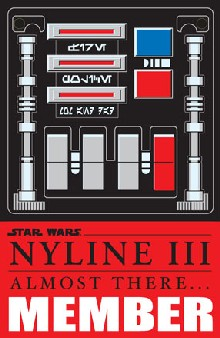
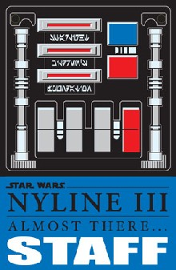

Every time you head over to the NYLine (provided you can pull yourself away), who you are and what your operating number is will always be designated by your official NYLine III badge. This badge will not only serve as your proof of membership to our organization during the line, but will also be necessary to enter the theater hours before the general public on opening night of Revenge of the Sith (so don't lose it!). In addition, your badge will also earn you discounts with some of our sponsors during the line, including a 10% discount at the comic book store giant, Forbidden Planet!! So wear it with pride, wear it with style, and most importantly, just wear it!
In 1999, our now iconic Liberty Jedi logo was featured on the badges that Starlight provided to our line members. When NYLine II came around, we decided to print badges that played off a famous NYC symbol, the metrocard. Our 2002 JediMasterCard badge proved to be a huge hit with line members and passersby alike. This time we've chosen a classic Star Wars emblem to feature, and do so with a slight nod to Triumph. Hidden in each badge are special New York and NYLine related messages for anyone with enough free time to decipher. And oh yes, we know that we're nerds for coming up with something like that, and WE LOVE IT! That's...why we're here!
 {kind=link}
{kind=link}